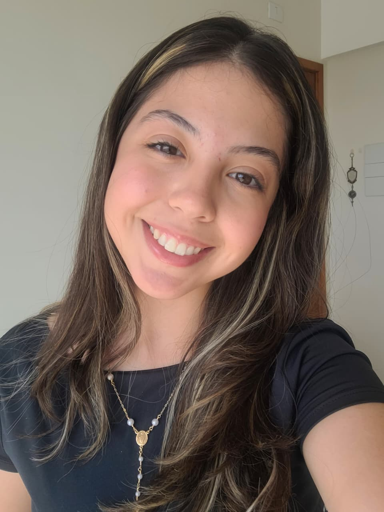

ODS que pretendo contribuir


Estudante da área de tecnologia com participação em projetos acadêmicos e de extensão. Possui experiência em organização, comunicação, liderança e trabalho em equipe, com interesse em criatividade, inovação e desenvolvimento de soluções.